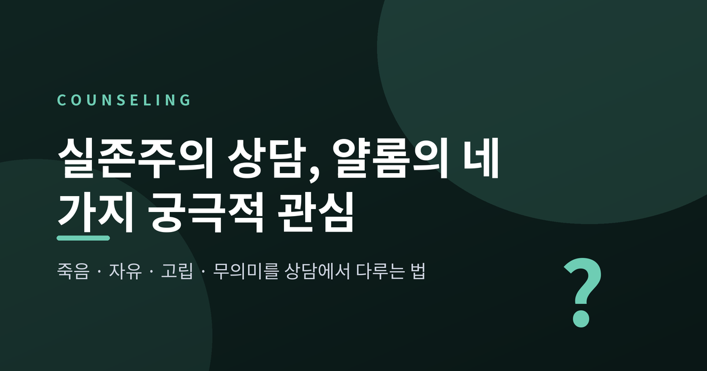
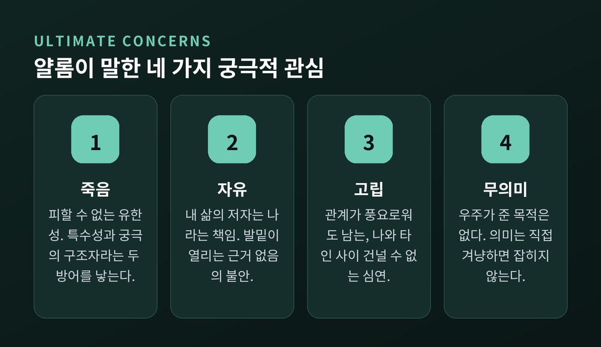
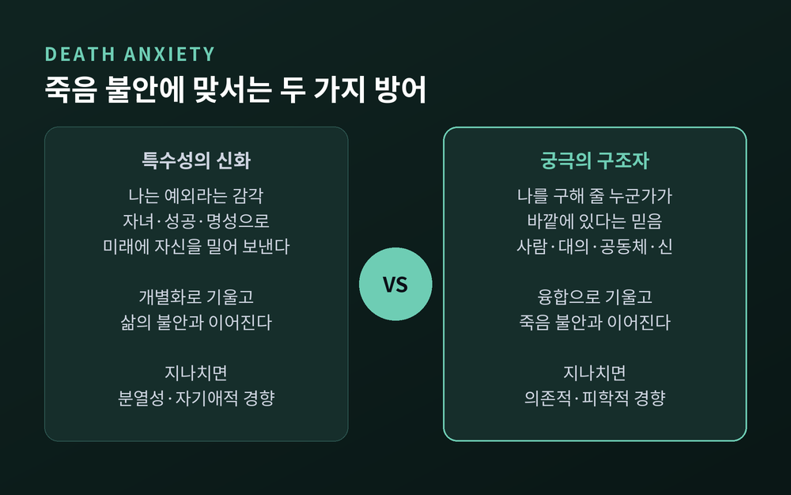
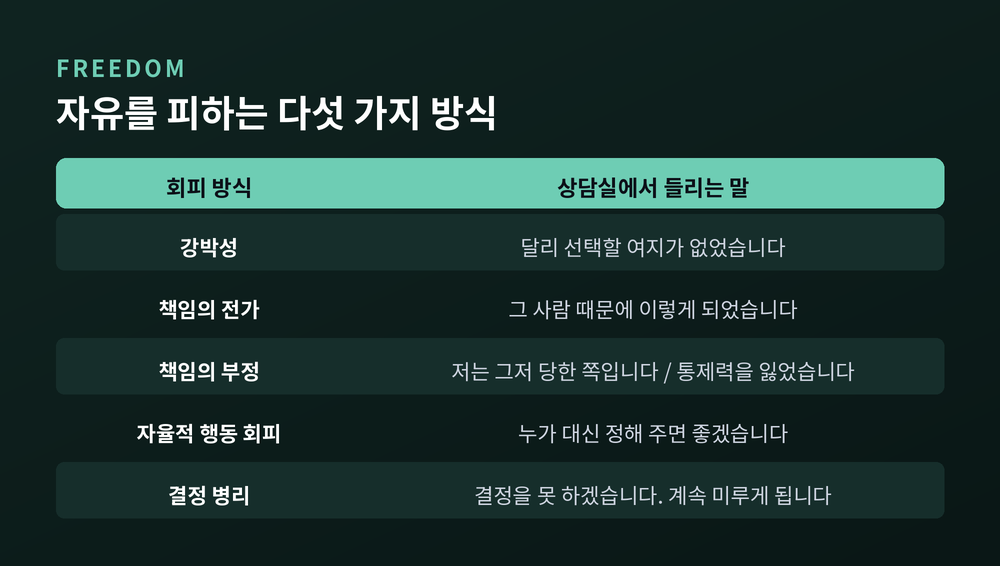
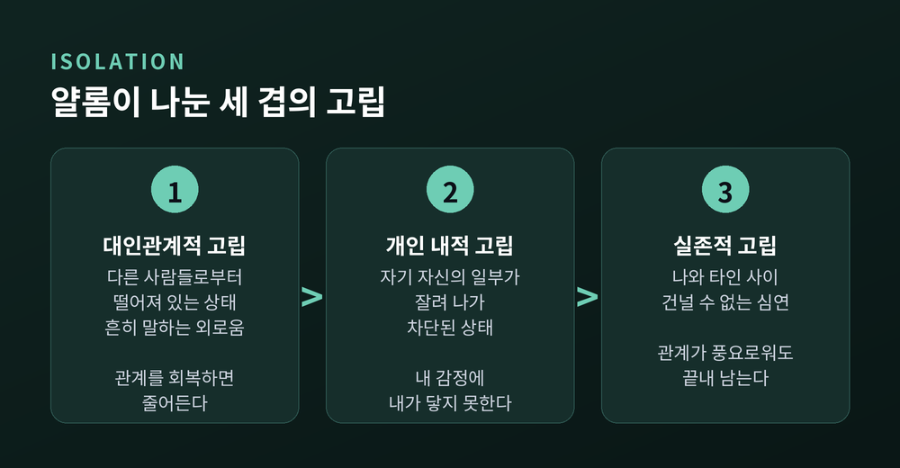
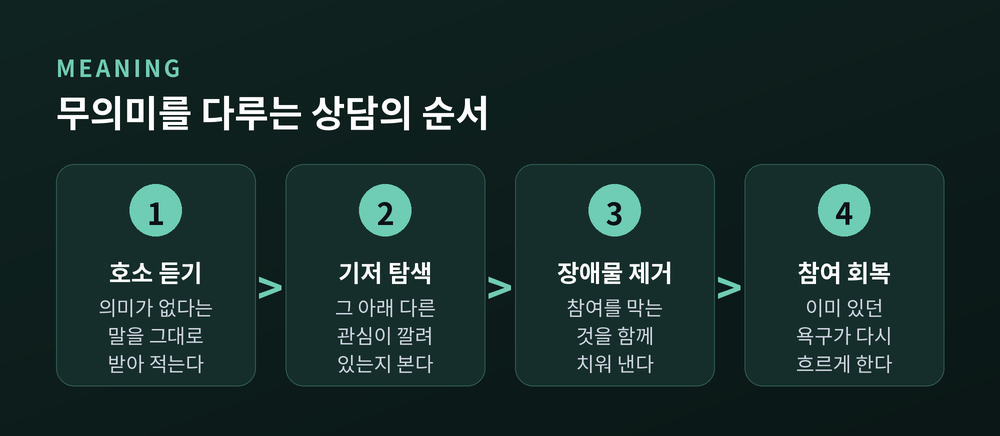
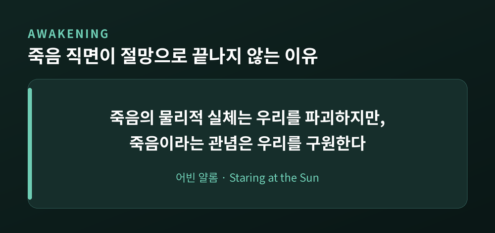

실존주의 상담, 얄롬의 네 가지 궁극적 관심을 상담에서 다루는 법
이번 글에서는 실존주의 상담의 뼈대인 네 가지 궁극적 관심을 정리해 보겠습니다. 어빈 얄롬이 1980년에 내놓은 『실존주의 심리치료』가 출발점입니다. 개념만 나열하지 않고, 상담실에서 이것이 실제로 어떤 말로 오가는지까지 따라가 보려 합니다.

세 줄 요약
- 얄롬은 죽음·자유·고립·무의미를 누구도 피할 수 없는 '실존의 주어진 것들'로 보았습니다. 모든 불안이 이 넷과의 대면에서 생겨난다고 설명합니다.
- 상담에서 다루는 것은 이 주제들 자체가 아니라, 그것을 피하려고 만든 방어입니다. 특수성에 대한 믿음과 궁극의 구조자에 대한 믿음이 대표적입니다.
- 효과 연구는 갈립니다. 의미 중심 개입은 큰 효과를 보였지만(d=0.65), 다른 계열은 유의한 효과가 없었습니다. 연구의 수와 질이 아직 부족합니다.
네 가지 궁극적 관심이란 무엇인가
얄롬은 1980년 『실존주의 심리치료』에서 인간이 피할 수 없이 마주하는 네 가지를 제시했습니다. 죽음, 자유, 실존적 고립, 무의미입니다.
그는 이것을 문제나 증상이라 부르지 않았습니다. '실존의 주어진 것들(givens of existence)'이라고 불렀습니다. 고칠 수 있는 결함이 아니라, 세계 안에 존재하는 인간의 피할 수 없는 일부라는 뜻입니다.
544쪽에 이르는 이 책은 네 부로 나뉩니다. 1부 죽음(2~5장), 2부 자유(6~7장), 3부 고립(8~9장), 4부 무의미(10~11장)입니다. 각 부마다 얄롬은 같은 순서를 반복합니다. 그 관심이 발달 과정에서 어떻게 변하는지, 어떤 정신병리와 이어지는지, 그리고 상담자가 무엇을 할 수 있는지.
불안이 생기는 자리도 분명히 짚습니다. 존재에 대해 우리가 참이기를 바라는 것과, 실제로 참일까 두려워하는 것 사이의 긴장. 그 틈에서 불안이 나온다고 보았습니다.
한 가지 짚고 넘어갈 것이 있습니다. 얄롬이 쓴 '궁극적 관심'은 틸리히나 키르케고르가 쓴 같은 단어와 뜻이 다릅니다. 신학적 헌신의 대상이 아니라, 누구에게나 주어진 조건을 가리킵니다.

죽음 — 특수성 신화와 궁극의 구조자
얄롬은 심리치료가 오랫동안 죽음을 비켜 갔다고 지적합니다. 프로이트부터 그랬습니다. 프로이트는 죽음 공포를 더 깊은 근원을 가리는 위장으로 보았습니다.
얄롬의 반박은 짧습니다. "프로이트는 많은 정신병리가 성의 억압에서 나온다고 믿었다. 그 관점은 너무 좁다." 우리가 억압하는 것은 성만이 아니라 자기 존재의 유한성 전체라는 것입니다.
죽음 불안은 생애 내내 같은 크기로 있지 않습니다. 밀물과 썰물처럼 오갑니다.
아이는 죽은 나뭇잎과 곤충, 사라진 조부모, 슬퍼하는 부모를 보며 일찍 눈치챕니다. 다만 그 이야기를 꺼낼 때마다 어른이 불편해하는 것을 알아채고 침묵을 배웁니다. 여섯 살 무렵부터 사춘기 전까지는 공포가 지하로 내려갑니다. 사춘기에 다시 솟구칩니다. 그리고 30년쯤 뒤, 자녀가 집을 떠나고 경력의 끝이 보이기 시작하면 또 한 번 강하게 올라옵니다. 얄롬의 표현이 인상적입니다. 삶의 정점에 올라 앞길을 보면, 길이 더는 오르막이 아니라는 것을 알게 된다고 했습니다.
문제는 그다음입니다. 우리는 이 공포를 그대로 견디지 못합니다. 그래서 방어를 만듭니다. 얄롬은 그 방어를 두 극으로 정리했습니다.
첫째, 특수성에 대한 믿음입니다. 나는 예외라는 감각입니다. 겉으로는 이렇게 나타납니다. 자녀를 통해 미래로 자신을 밀어 보내거나, 부유해지고 유명해지고 계속 커지려 하거나, 강박적인 보호 의례를 만들거나, 자기 안전을 개의치 않고 영웅처럼 사는 것입니다. 이 쪽은 개별화로 기울고 '삶의 불안'과 이어집니다. 지나치면 분열성·자기애적 경향으로 흐를 수 있습니다.
둘째, 궁극의 구조자에 대한 믿음입니다. 나를 구해 줄 누군가가 바깥에 있다는 감각입니다. 사람일 수도, 대의일 수도, 공동체나 신적 존재일 수도 있습니다. 이 쪽은 융합으로 기울고 '죽음 불안'과 이어집니다. 지나치면 수동적·의존적·피학적 경향으로 흐를 수 있습니다.
사람은 이 두 극 사이를 왔다 갔다 합니다. 그리고 어느 쪽이든 방어가 무너질 때 우울 증상이 나타난다는 것이 얄롬의 관찰입니다. 흥미로운 지적도 있습니다. 개별화 쪽이 융합 쪽보다 정신병리와 덜 동반되며 더 효과적인 방어로 보인다고 했습니다.
다만 얄롬은 어느 방어도 충분하지 않다고 못 박습니다. "가장 확고하고 유서 깊은 방어에도 불구하고 우리는 죽음 불안을 결코 완전히 제압할 수 없다."

자유 — 발밑의 땅이 열리는 감각
두 번째 관심은 자유입니다. 언뜻 반가운 단어처럼 보이는데요. 얄롬이 말하는 자유는 해방감이 아닙니다.
그에게 자유는 책임과 붙어 있습니다. 책임이란 "자기 자신, 운명, 삶의 곤경, 감정, 그리고 경우에 따라서는 자신의 고통에 대한 저자됨"입니다. 내가 겪는 일의 저자가 나라는 인식. 얄롬은 이것을 "깊이 두려운 통찰"이라고 불렀습니다.
그가 남긴 묘사는 이렇습니다.
"이런 방식으로 실존을 경험하는 것은 어지러운 감각이다. 어느 것도 보이던 대로가 아니다. 발밑의 땅 자체가 열리는 것 같다."
이 감각에 붙은 이름이 근거 없음(groundlessness)입니다. 얄롬은 많은 실존 철학자들이 이 불안을 '원초적 불안'이라 불렀다고 덧붙입니다. 죽음에 결부된 불안보다도 더 깊이 파고드는 불안이라는 것입니다. 네 관심에 고정된 서열이 없다는 뜻이기도 합니다.
시대 진단도 함께 실려 있습니다. 예전에는 고전적인 정신신경증이 상담실의 주된 손님이었습니다. 지금은 다릅니다. 얄롬의 말로는 "고전적 정신신경증 증후군은 희귀해졌"고, "오늘날의 환자는 억압된 충동보다 자유와 씨름"합니다. 무엇을 하고 싶은가라는 선택의 문제를 감당해야 합니다.
그래서 우리는 자유를 피하는 방법을 발명합니다. 얄롬이 정리한 책임 회피의 방식은 다섯 가지입니다.
- 강박성 — 나에게는 달리 선택할 여지가 없었다고 느끼게 만드는 구조
- 책임의 전가 — 그 사람 때문에 이렇게 되었다
- 책임의 부정 — '무고한 피해자'라는 자리, 또는 '통제력을 잃었다'는 설명
- 자율적 행동의 회피 — 스스로 결정해야 하는 상황 자체를 피함
- 결정 병리 — 결정 앞에서 마비되거나 무한히 미루는 상태
상담실에서는 이렇게 나타납니다. 한 내담자가 몇 달째 같은 이야기를 반복합니다. 회사가 자신을 이렇게 만들었고, 가족이 자신을 여기 붙들어 두었다고요. 상담자는 사실을 반박하지 않습니다. 대신 조용히 묻습니다. "그 상황에서 당신이 한 선택은 무엇이었을까요." 비난이 아닙니다. 지워져 있던 저자의 자리를 되돌려 놓는 질문입니다.
여기서 균형이 중요합니다. 얄롬은 책임을 무한정 밀어붙이지 않았습니다. 그는 우울이 외적 통제소재나 학습된 무기력과 더 잘 연관된다는 경험적 연구를 함께 검토했습니다. 그리고 책임의 한계를 분명히 적었습니다. 역경이 만만치 않을 때에도 남는 것은 그 역경에 대해 취하는 태도에 대한 책임이라는 것입니다.
얄롬이 덧붙인 개념이 하나 더 있습니다. 실존적 죄책감입니다. 타인이나 규범을 어겨서가 아니라, 자기 자신을 어겨서 생기는 죄책감입니다. 할 수 있는 만큼 살지 못했을 때 올라오는 깊은 감정입니다. 얄롬은 이것을 병이 아니라 건설적인 힘으로 보았습니다. 후회로 시작된 감정이 상담을 지나며 가능성의 감각으로 바뀌는 경우가 있기 때문입니다.

고립 — 겹이 다른 세 가지 외로움
세 번째는 고립입니다. 얄롬은 이것을 한 덩어리로 두지 않고 세 겹으로 나눴습니다.
- 대인관계적 고립 — 다른 사람들로부터 떨어져 있는 상태. 흔히 말하는 외로움입니다.
- 개인 내적 고립 — 자기 자신의 일부가 잘려 나가 차단된 상태입니다.
- 실존적 고립 — 나와 다른 존재 사이의 건널 수 없는 심연입니다.
앞의 둘은 관계를 회복하면 줄어듭니다. 세 번째는 다릅니다. 관계가 아무리 풍요로워도 끝내 남는 부분이 있습니다.
얄롬은 그래서 관계가 최선일 때 어떤 모습인지를 함께 그렸습니다. 욕구 없는 사랑입니다. 상대를 내 필요를 채우는 수단으로 두지 않는 관계입니다. 마르틴 부버의 '나-너' 관계, 매슬로가 말한 존재 사랑, 프롬이 말한 욕구 없는 사랑이 같은 곳을 가리킵니다.
반대편에는 융합이 있습니다. 나와 너의 경계를 지워 고립을 없애려는 시도입니다. 편해 보이지만 대가가 큽니다. 얄롬은 융합이 앞서 나온 '궁극의 구조자' 믿음과 상당 부분 겹친다고 지적했습니다. 죽음의 방어와 고립의 방어가 같은 뿌리를 쓴다는 뜻입니다. 네 가지 관심은 따로 놓인 항목이 아니라 서로 맞물려 있습니다.
이 개념은 이후 실증 연구의 대상이 되기도 했습니다. Pinel 등이 2017년에 만든 실존적 고립 척도는 6문항으로 구성되어 있고, 외로움의 정서적 요소를 빼고 인지적 차원만 측정합니다. 정의는 이렇습니다. 자신이 자기 경험 안에서 혼자이며, 타인이 자신의 관점을 이해할 수 없다는 주관적 감각.
연구 결과는 눈여겨볼 만합니다. 실존적 고립은 외로움과 구별되는 별개의 것으로 확인되었습니다. 그리고 실존적 고립이 높을수록 삶의 목적과 유의미감이 낮고, 불안·우울과 양의 상관을 보였습니다. 개념이 아니라 실제 고통과 맞닿아 있다는 뜻입니다.

무의미 — 의미는 곁눈질로만 잡힙니다
네 번째는 무의미입니다. 얄롬은 먼저 '우주적 의미'와 '지상적 의미'를 나눕니다. 우주가 나에게 부여한 목적이 있는가라는 질문과, 내 삶이 나에게 어떤 의미인가라는 질문은 다른 질문입니다.
그가 정리한 의미의 원천은 두 계열입니다. 자기에 초점을 둔 쾌락주의와 자기실현, 그리고 자기를 넘어서는 이타주의·대의에의 헌신·창조성입니다.
핵심은 그다음에 나옵니다. 의미는 직접 겨냥하면 잡히지 않습니다. 프랭클이 쾌락 추구를 역설적으로 본 것과 같습니다. 의미도 곁눈질로, 간접적으로만 얻어집니다. "의미를 찾겠다"고 정면으로 달려들수록 멀어집니다.
그래서 얄롬의 상담은 순서가 다릅니다. 내담자가 "사는 의미를 모르겠다"고 말할 때, 그는 의미를 만들어 주려 하지 않습니다. 먼저 그 아래에 다른 것이 깔려 있는지 봅니다. 문화적 문제일 수도 있고, 죽음이나 자유나 고립이라는 나머지 세 관심의 문제일 수도 있기 때문입니다.
정말로 순수한 무의미가 남았을 때 얄롬이 내놓는 답은 의외로 담백합니다. 그는 삶에 참여하려는 욕구가 이미 내담자 안에 있다고 보았습니다. 만족스러운 관계에, 사회적·창조적 활동에, 일에, 자기를 넘어서는 추구에. 그 욕구는 처음부터 거기 있었다는 것입니다.
그렇다면 상담자가 할 일은 하나로 좁혀집니다. 참여를 가로막고 있는 장애물을 치우는 것입니다. 의미를 주입하는 것이 아닙니다.

상담 장면에서는 어떻게 다루나
그렇다면 이 무거운 주제들이 상담실에서 실제로 어떻게 다뤄질까요.
얄롬의 답은 지금-여기(here and now)입니다. 원리는 단순합니다. 내담자의 대인관계 문제는 결국 상담 관계 안에서 재현됩니다. 친구와 가족에게 배신당했다고 느끼는 사람은 언젠가 상담자에게서도 배신감을 느낍니다. 그 순간이 회피할 사고가 아니라 작업의 재료가 됩니다.
가상의 장면을 하나 그려 보겠습니다.
내담자: "지난주에 선생님이 시계를 보시더군요. 저도 결국 시간 채우는 사람이구나 싶었습니다."
상담자: "그 말씀을 꺼내 주셔서 다행입니다. 저는 그때 남은 시간을 가늠하고 있었습니다. 그런데 지금 궁금한 것이 있습니다. 밖에서도 누군가의 사소한 동작이 그렇게 읽힐 때가 있으신지요."
밖에서 벌어지는 일을 전해 듣는 대신, 방 안에서 지금 일어난 일을 함께 봅니다. 이것이 지금-여기 작업입니다.
또 하나의 축은 상담자의 진정성입니다. 얄롬은 치료적 변화가 진실한 만남에서 나오며, 그것은 정의상 상호성을 함축한다고 보았습니다. 그는 되묻습니다. 이상적인 상담 관계가 진정성의 관계라면, 상담자도 그 안에서 실재하는 한 사람이어야 하지 않겠는가. 자기를 여는 쪽이 오직 내담자뿐이어야 하는가.
모든 답을 아는 척하지 않는 것. 임상적 중립 뒤로 숨지 않는 것. 정서적으로 가용한 채로 거기 있는 것. 그것이 얄롬이 말한 진정성입니다.
그리고 여기서 앞 장의 결론과 이어집니다. 무의미를 다룰 때 상담자가 쓸 수 있는 최선의 도구는 상담자 자신이 내담자와 맺는 참여라고 얄롬은 썼습니다. 기법이 아니라 관계가 도구라는 뜻입니다.
죽음을 다룰 때도 마찬가지입니다. 얄롬은 관념만으로는 죽음의 공포를 당해 내지 못한다고 보았습니다. 관념과 인간적 연결의 시너지가 가장 강력한 도움이라고 했습니다.
죽음을 직면하는 일이 절망으로 끝나지 않는 이유도 여기 있습니다. 얄롬이 남긴 한 문장이 이 글 전체를 압축합니다.
"죽음의 물리적 실체는 우리를 파괴하지만, 죽음이라는 관념은 우리를 구원한다."
죽음 자체를 예찬하는 말이 아닙니다. 유한하다는 자각이 삶의 순서를 다시 매기게 만든다는 뜻입니다. 얄롬은 이것을 '각성 경험'이라 불렀고, 죽음을 직면하는 일이 판도라의 상자를 여는 것이 아니라 더 풍요롭고 더 자비로운 방식으로 삶에 다시 들어서게 해 준다고 적었습니다.
실제 기법도 하나 소개되어 있습니다. 탈동일시 연습입니다. "나는 누구인가"에 대한 답을 여러 개 적은 뒤, 그것을 하나씩 내려놓는 명상입니다. 직함, 역할, 관계를 차례로 놓아 보며 그럼에도 남는 것이 무엇인지 보는 작업입니다.

프랭클, 빈스방거, 메이와 무엇이 다른가
실존주의 상담은 한 사람이 만든 단일 학파가 아닙니다. 계보가 있습니다.
유럽이 먼저였습니다. 빈스방거와 보스는 하이데거 철학에 기대어 현존재분석을 발전시켰습니다. 보스는 하이데거와 직접 협력했습니다. 프랭클은 로고테라피를 세웠고, 의미의 발견에 초점을 두었습니다. 그의 의도는 심리주의에 맞서 심리학에 영적 차원을 들여오는 것이었습니다. 로고테라피의 노에틱 차원은 심리적 영역을 넘어선 인간 존재의 영적 측면을 가리킵니다.
미국으로 넘어온 계기는 1958년입니다. 롤로 메이가 어니스트 앙헬, 앙리 엘렌베르거와 함께 편집한 『Existence: A New Dimension in Psychiatry and Psychology』가 유럽 실존 사상을 미국 임상 현장에 공식 소개했습니다. 이 책은 흔히 미국 실존주의 운동의 출발점으로 꼽히고, 메이는 미국 실존심리학의 아버지로 불립니다.
얄롬과 부겐탈은 그 뒤를 잇습니다. 메이와 얄롬은 미국 실존주의 치료 학파의 가장 널리 알려진 대표자로 꼽힙니다.
얄롬 자신이 밝힌 빚도 있습니다. 의지와 죽음 불안의 역할은 오토 랑크에게서, 미래 지향적 동기는 카렌 호나이에게서, 두려움과 자유는 에리히 프롬에게서, 책임과 고립은 헬무트 카이저에게서 받았다고 적었습니다.
분파 사이의 거리도 있습니다. 한 비교 연구에 따르면 로고테라피 치료자들은 주로 자기 학파의 저자와 텍스트에서 영향을 받았다고 보고했고, 다른 분파에 미친 영향은 크지 않았습니다. 하나의 흐름처럼 보이지만 안에서는 서로 거리가 있는 셈입니다.
APA 심리학 사전은 실존주의-인본주의 치료를 이렇게 정의합니다. 행동이나 인지만이 아니라 전인에 초점을 두고, 내담자의 주관적 경험·자유 의지·자기 삶의 방향을 결정할 능력을 강조하는 접근이라고요.
효과 연구는 어디까지 왔나
좋은 이야기만 하고 끝내면 정직하지 않습니다. 근거를 봐야 합니다.
가장 널리 인용되는 것은 Vos, Craig, Cooper가 2014년 『Journal of Consulting and Clinical Psychology』에 발표한 메타분석입니다. 적격 무작위 대조 시험 21건을 찾아 고유 데이터를 가진 15개 연구를 포함했고, 참여자는 총 1,792명이었습니다.
결과는 계열에 따라 갈렸습니다.
| 치료 유형 | 연구 수 | 결과 |
|---|---|---|
| 의미 치료 | 6건 | 삶의 긍정적 의미에 큰 효과 (직후 d=0.65, 추후 d=0.57) / 정신병리 d=0.47, 자기효능감 d=0.48 |
| 지지적-표현적 치료 | 5건 | 정신병리에 작은 효과 (치료 후 d=0.20, 추후 d=0.18) |
| 경험적-실존적 치료 | 2건 | 유의한 효과 없음 |
| 인지적-실존적 치료 | 1건 | 유의한 효과 없음 |
저자들의 결론은 조심스럽습니다. "연구 수가 적고 질이 낮음에도 불구하고, 일부 실존주의 치료는 특정 인구집단에 유익해 보인다." 특히 지지를 받은 것은 심리교육과 연습을 포함하고 삶의 의미를 직접적이고 긍정적으로 다루는 구조화된 개입이었으며, 대상은 신체 질환이 있는 환자였습니다.
비판도 분명합니다.
- 원리와 실천에 대한 체계적 진술이 부족하고, 모호하고 포괄적인 용어를 씁니다.
- 분파마다 편차가 커서 정의 가능한 하나의 핵심 실천 집합이 없습니다.
- 매뉴얼화를 꺼려 왔습니다. 모델을 기계화하는 것이 실존주의의 기본 신조에 반한다는 반론이 있기 때문입니다.
- 효능과 효과에 관한 경험적 증거가 다른 접근에 비해 부족합니다.
- 내담자의 동기에 크게 의존하고, 다양한 문화적 틀에 적용할 때의 문제도 지적됩니다.
아직 완결된 근거를 갖춘 접근은 아닙니다. 그 점은 인정하고 시작하는 편이 낫습니다.
정리하면 이렇습니다.
실존주의 상담은 죽음·자유·고립·무의미를 없애 주겠다고 약속하지 않습니다. 없앨 수 있는 것이 아니기 때문입니다. 대신 그것을 피하려다 만들어진 방어를 함께 들여다봅니다. 특수성의 신화, 궁극의 구조자, 융합, 책임의 전가 — 모두 살아남기 위해 만든 것들입니다. 상담은 그 방어를 비난하지 않고, 그 방어가 지금도 필요한지를 함께 묻습니다.
얄롬이 남긴 말을 한 줄로 줄이면 이렇습니다. "직면은 삶을 빼앗는 것이 아니라 삶을 돌려준다."
네 가지를 배워야 잘 사는 것이냐고 물으신다면, 그렇지는 않다고 답하겠습니다. 다만 그것들이 이미 우리 안에서 작동하고 있다는 사실을 아는 사람과 모르는 사람의 하루는, 아마 같지 않을 것입니다.
꼭 전하고 싶은 말
이 글은 실존주의 상담 이론을 소개하는 정보성 글입니다. 상담이나 치료를 대체하지 않습니다. 본문에 나온 상담 장면은 모두 일반화된 가상의 예이며, 특정 인물의 사례가 아닙니다.
죽음에 대한 생각이 멈추지 않거나, 살아 있는 의미를 찾기 어렵거나, 아무도 나를 이해하지 못한다는 감각이 오래 이어진다면 혼자 견디지 않으시길 바랍니다. 실존적 고립이 불안·우울과 이어진다는 연구 결과도 있습니다. 가까운 정신건강의학과나 상담센터, 지역 정신건강복지센터에 연락해 보시길 권합니다. 도움을 청하는 일은 약함이 아니라, 얄롬이 말한 '참여'의 가장 구체적인 형태입니다.